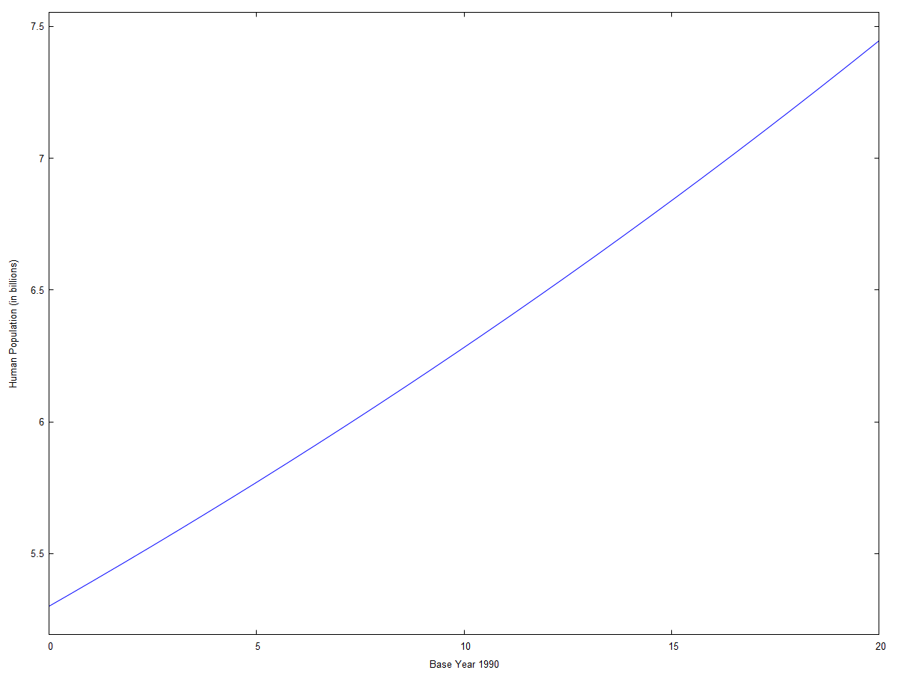
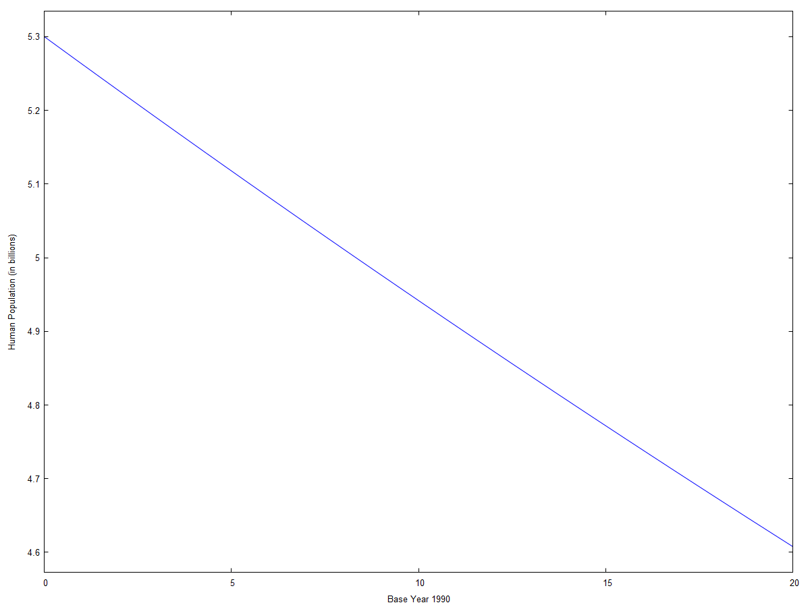

\( \DeclareMathOperator{\abs}{abs} \newcommand{\ensuremath}[1]{\mbox{$#1$}} \)
DSC-VI : Practical-04
Exponential Growth/Decay Model
1 Exponential Growth
| --> |
kill
(
all
)
$
eqn : ' diff ( x , t ) = b · x − a · x ; sol : ode2 ( eqn , x , t ) ; fsol : ic1 ( sol , x = x_0 , t = 0 ) ; fsol1 : ev ( fsol , a = 0 . 010 , b = 0 . 027 , x_0 = 5 . 3 ) ; /* b > a */ wxplot2d ( rhs ( fsol1 ) , [ t , 0 , 20 ] , [ xlabel , "Base Year 1990" ] , [ ylabel , "Human Population (in billions)" ] ) $ |
\[\operatorname{ }\frac{d}{d t} x=b x-a x\]
\[\operatorname{ }x=\ensuremath{\mathrm{\% c}} {{\% e}^{\left( b-a\right) t}}\]
\[\operatorname{ }x={{\% e}^{b t-a t}} {x_0}\]
\[\operatorname{ }x=5.3 {{\% e}^{0.017 t}}\]
\[\operatorname{ }\]
2 Exponential Decay
| --> |
kill
(
all
)
$
eqn : ' diff ( x , t ) = b · x − a · x ; sol : ode2 ( eqn , x , t ) ; fsol : ic1 ( sol , x = x_0 , t = 0 ) ; fsol1 : ev ( fsol , a = 0 . 027 , b = 0 . 020 , x_0 = 5 . 3 ) ; /* b > a */ wxplot2d ( rhs ( fsol1 ) , [ t , 0 , 20 ] , [ xlabel , "Base Year 1990" ] , [ ylabel , "Human Population (in billions)" ] ) $ |
\[\operatorname{ }\frac{d}{d t} x=b x-a x\]
\[\operatorname{ }x=\ensuremath{\mathrm{\% c}} {{\% e}^{\left( b-a\right) t}}\]
\[\operatorname{ }x={{\% e}^{b t-a t}} {x_0}\]
\[\operatorname{ }x=5.3 {{\% e}^{-0.006999999999999999 t}}\]
\[\operatorname{ }\]
Created with wxMaxima.
The source of this Maxima session can be downloaded here.